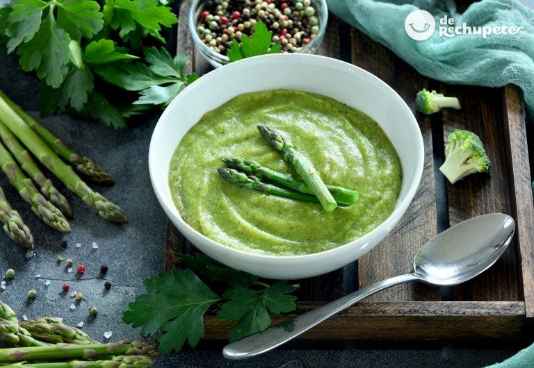

Pancakes

Crema de verduras con espárragos

14 espárragos trigueros
1 cebolla grande
1 puerro
2 patatas para cocer
400 g. de espinacas congeladas
500 ml. de agua o caldo de verduras
6 quesitos o queso fresco (también se podría añadir un poco de nata para cocinar)
Sal y pimienta negra recién molida (al gusto de cada casa)
50 ml. de aceite de oliva virgen extra
Ir al pricipio